The EasyFlash 3 has its own USB PID, so the tools can easily recognize the right USB device. Additionally the right name can be shown in the device manager. For this the FTDI chip has to be programmed by the manufacturer. End users don't need to do this all. They need the EasyFlash 3 Drivers only.
First of all you need some tools and drivers which can be downloaded at the following places:
EasyFlash 3 Template for FT245 (right click and save as)
Download and unzip these files to a new directory. Now plug your EasyFlash 3 Hardware to USB. Windows will detect new hardware and ask for drivers. Following images shows the driver installation.
Do not connect to "Windows Update":
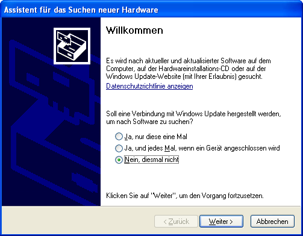
Select a source for a driver manually:
Point to the path were you have unzipped the CDM20814_WHQL_Certified.zip
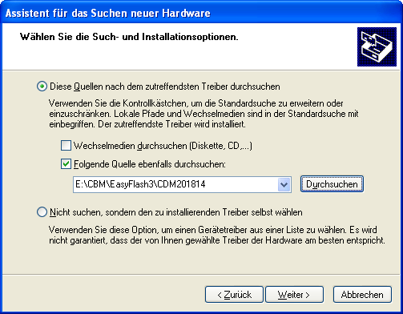
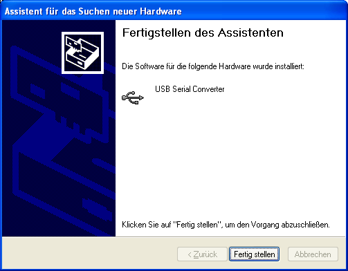
Next, Windows will find a USB Serial Port and ask for drivers. If Windows doesen't find new Hardware unplug the EasyFlash 3 from USB and reconnect it.
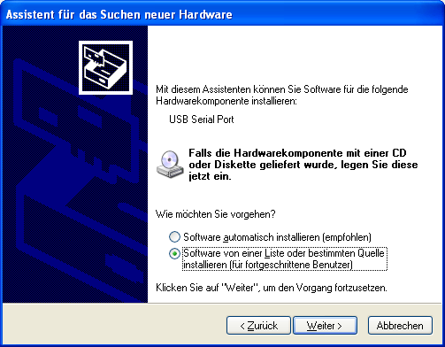
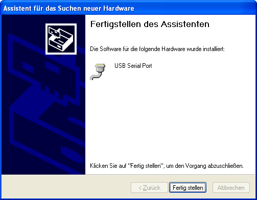
If the installation was succsessful take a look into the Windows Device Manager, the EasyFlash 3 appears as a USB Serial Port (COM..)
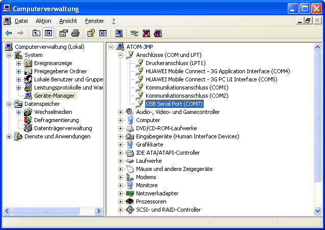
Now start the FTProg Tool and click on the Scan/Parse icon.
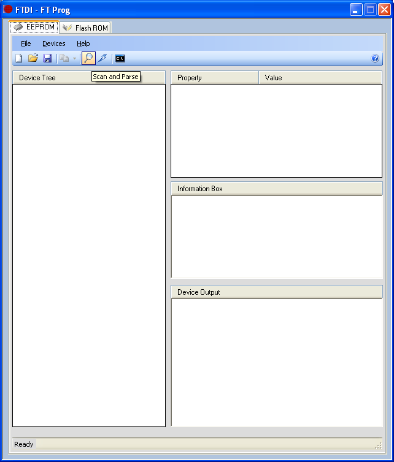
FTProg shows up the connected device:
At this point you must load and apply a template for the device by right click on the device and select "Apply Template" > "From File". Select the file easyflash3-ftdi-template.xml you unpacked before.
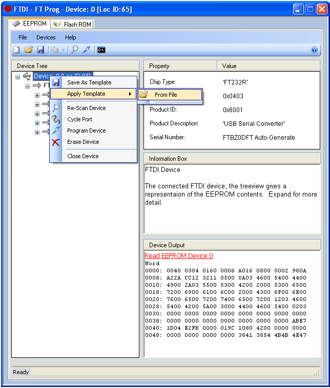
If you applied the template correctly, the FTProg-Window should look like this:
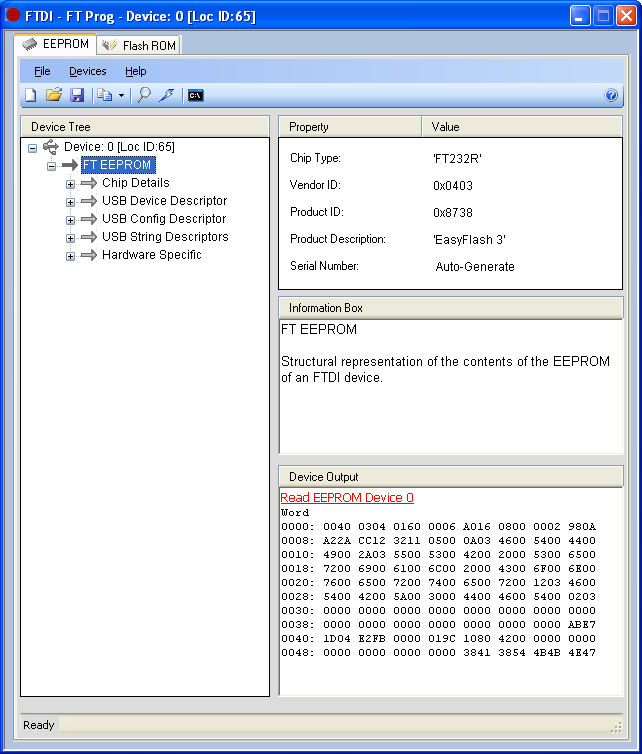
Now it´s time to program the chip :)
Click on the "Program Devices" icon, a window pops up and then click "Program"
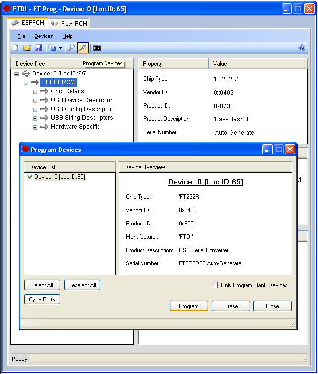
After that, close FTProg and unplug EasyFlash 3 from USB and reconnect it. If programming was correctly done Windows will detect again new hardware and ask for drivers. Now you can install the real EasyFlash drivers.
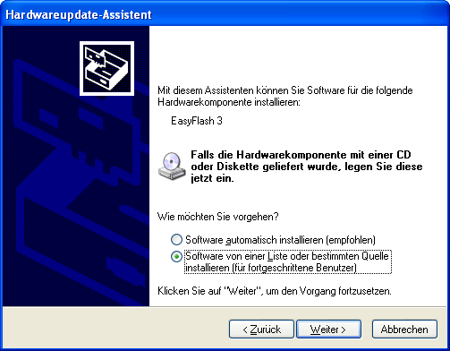
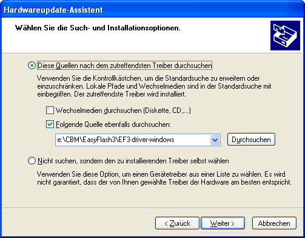
If all was succsessfully done the Windows Device Manager shows a new device class with EasyFlash 3 as device.
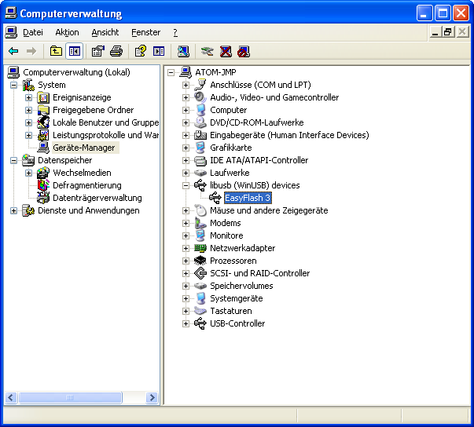
Congratulations!